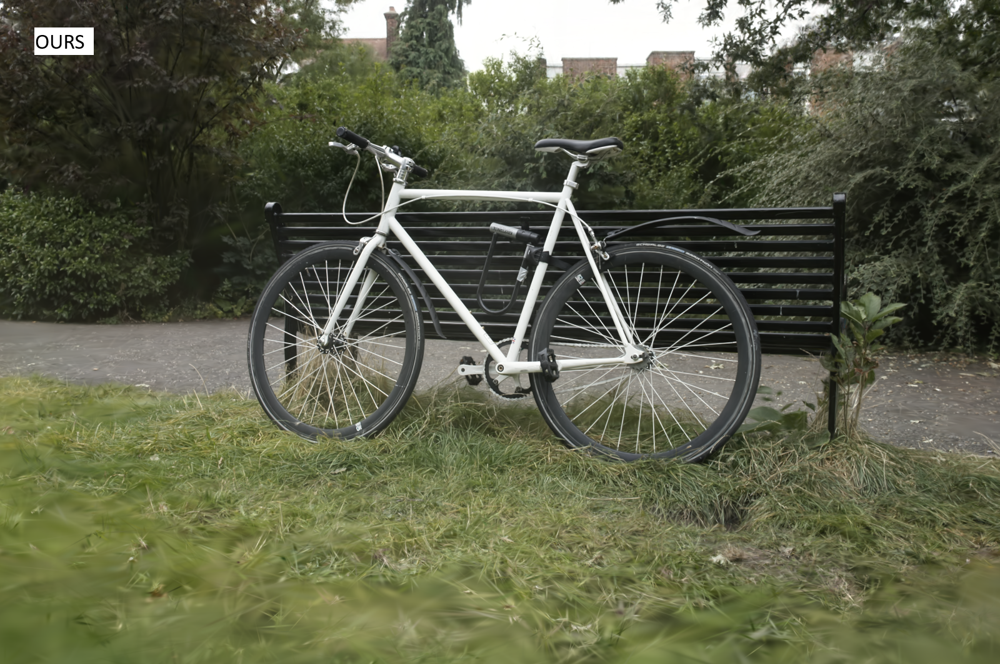

The field of Novel View Synthesis has been revolutionized by 3D Gaussian Splatting (3DGS), which enables high-quality scene reconstruction that can be rendered in real-time. 3DGS-based techniques typically suffer from high GPU memory and disk storage requirements which limits their practical application on consumer-grade devices. We propose Opti3DGS, a novel frequency-modulated coarse-to-fine optimization framework that aims to minimize the number of Gaussian primitives used to represent a scene, thus reducing memory and storage demands. Opti3DGS leverages image frequency modulation, initially enforcing a coarse scene representation and progressively refining it by modulating frequency details in the training images. On the baseline 3DGS, we demonstrate an average reduction of 62% in Gaussians, a 40% reduction in the training GPU memory requirements and a 20% reduction in optimization time without sacrificing the visual quality. Furthermore, we show that our method integrates seamlessly with many 3DGS-based techniques, consistently reducing the number of Gaussian primitives while maintaining, and often improving, visual quality.
We start with a uniform distribution of larger Gaussians as compared to 3DGS, which starts heavy densification from the very start of optimization, thus complicating the loss landscape. The zoomed views show efficient use of the initial sparse point cloud by our approach.
(a) Impact of using different decay rate functions to control the kernel size for image filtering. Combining step decay function with the mean filter performs best and is adopted across all experiments. Each point represents the average score for the respective dataset.
(b) Visualization of different decay rates. The vertical axis shows the current kernel size for the filtering algorithm at any given iteration. Frequency modulation stops after 12,000 iterations, with full-sized images passed for the remaining 18,000 iterations.
Drag the slider to compare Opti3DGS(left) vs 3DGS(right)
@inproceedings{10.1145/3756863.3769707,
author = {Farooq, Umar and Guillemaut, Jean-Yves and Thomas, Graham and Hilton, Adrian and Volino, Marco},
title = {Optimized 3D Gaussian Splatting using Coarse-to-Fine Image Frequency Modulation},
year = {2025},
isbn = {9798400721175},
publisher = {Association for Computing Machinery},
address = {New York, NY, USA},
url = {https://doi.org/10.1145/3756863.3769707},
doi = {10.1145/3756863.3769707},
booktitle = {Proceedings of the 22nd ACM SIGGRAPH European Conference on Visual Media Production},
articleno = {7},
numpages = {10},
keywords = {3D Gaussian Splatting, Efficient 3D Gaussian Splatting, Novel View Synthesis},
series = {CVMP '25}
}